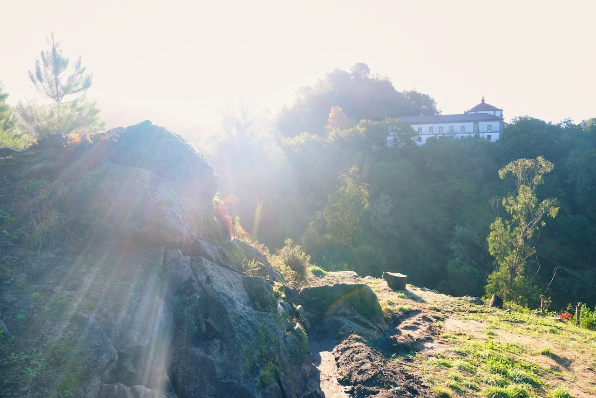
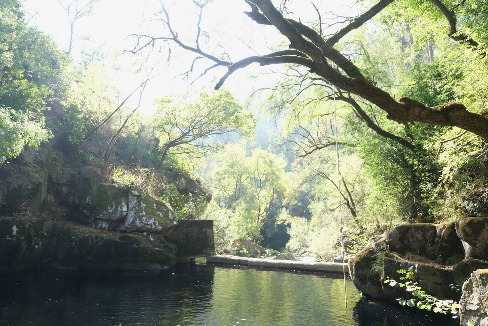
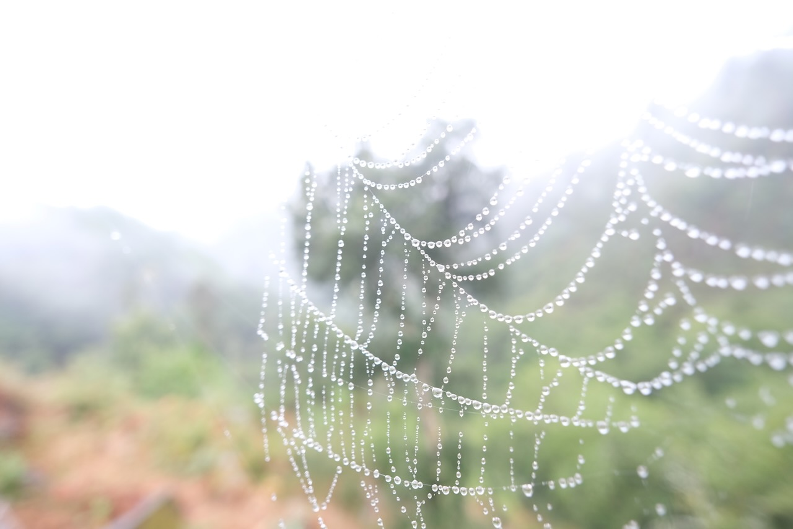
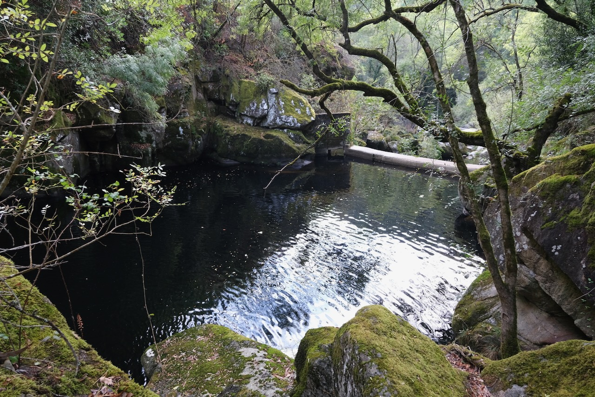
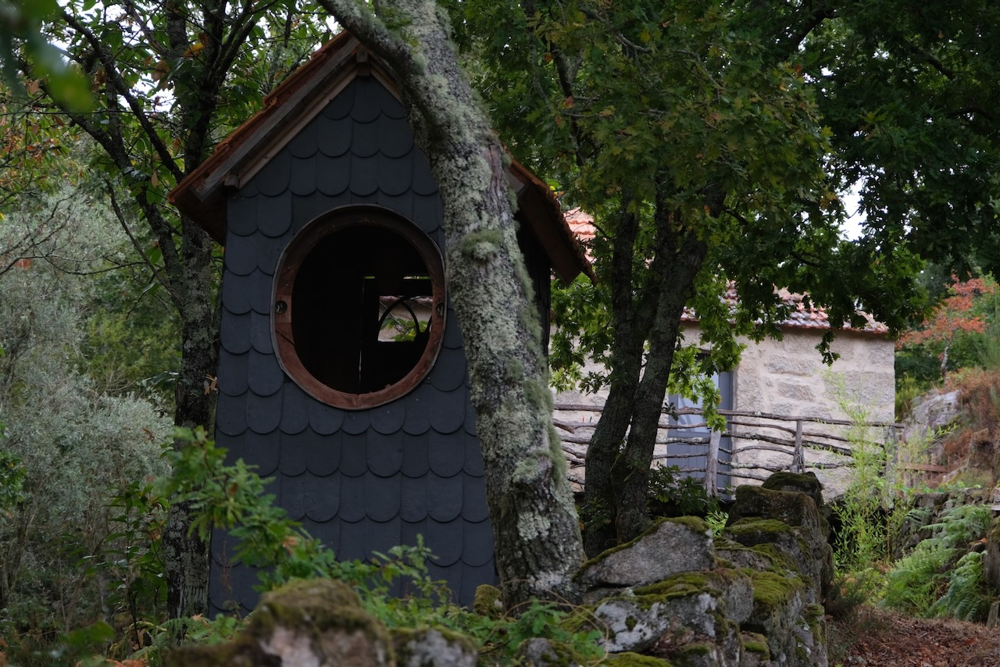
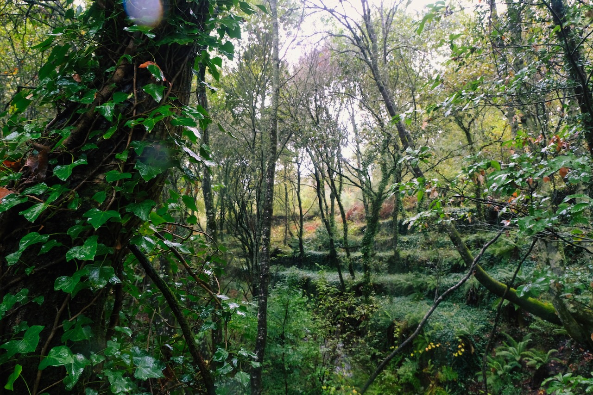
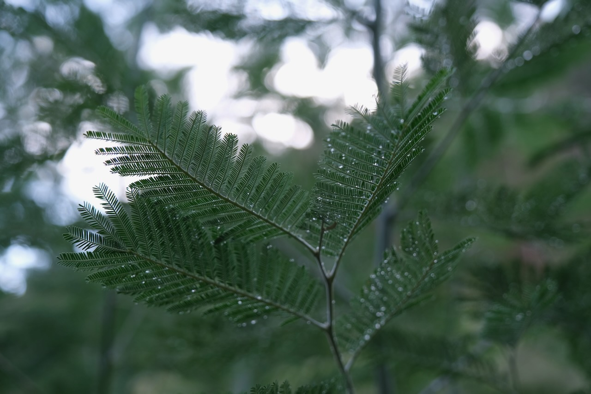
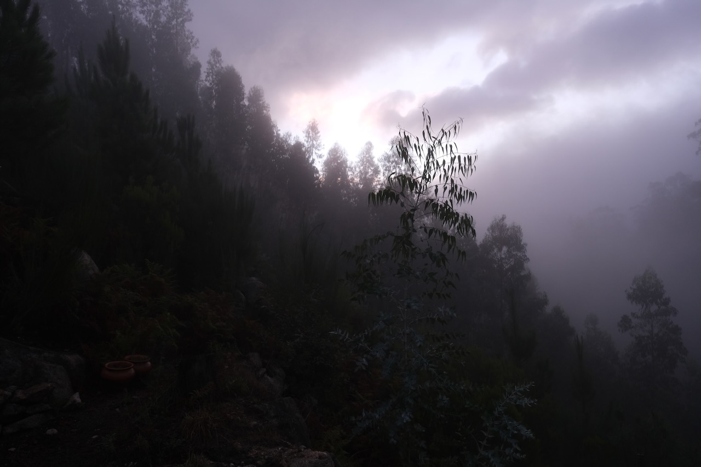
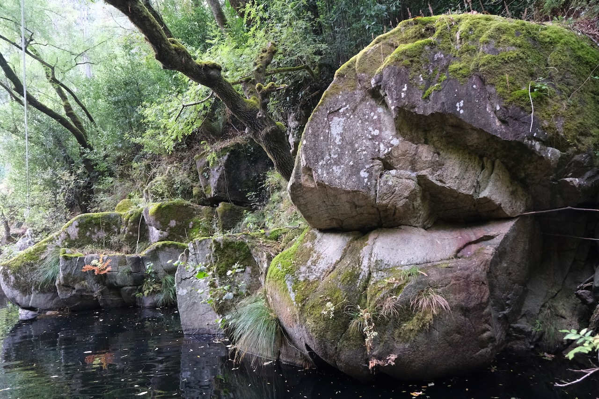
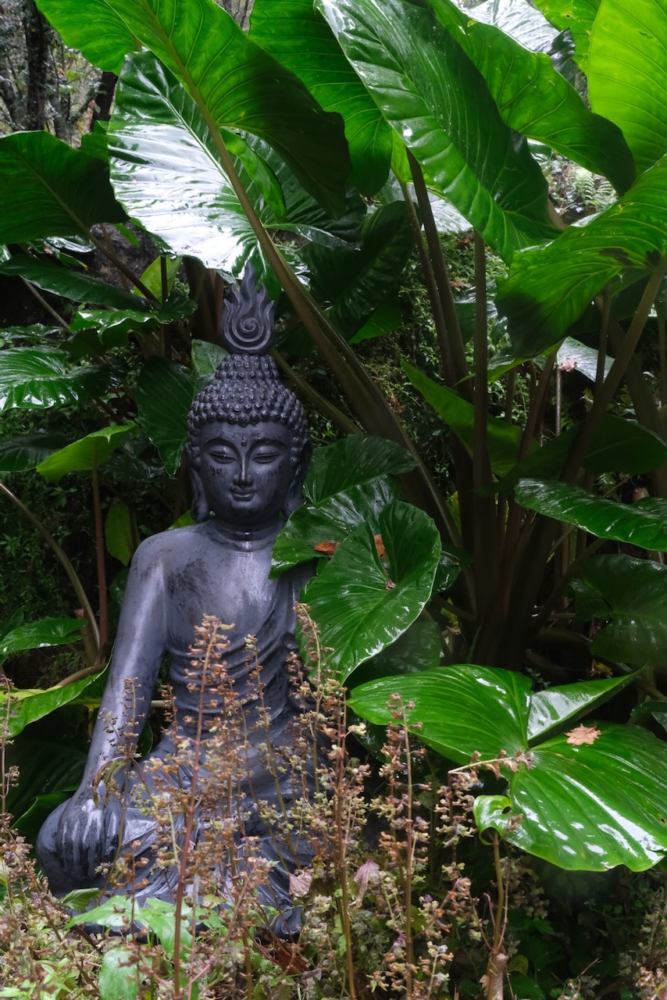

Paradise in Action
Paraíso em Ação
Água—water as life-force · Lila—sacred play, cosmic creativity
Água—água como força vital · Lila—jogo sagrado, criatividade cósmica
Where sacred technology meets sacred land
Onde tecnologia sagrada encontra terra sagrada
Our Mission
A Nossa Missão
The Vision
A Visão
Água Lila is more than our first Temple—it's the living laboratory where the Synchronicity Engine's principles are tested in soil, stone, and sweat.
Água Lila é mais do que o nosso primeiro Templo—é o laboratório vivo onde os princípios do Synchronicity Engine são testados em solo, pedra e suor.
This abandoned canyon valley is being transformed into a sanctuary of Divine Play. Not a retreat center. Not a commune. A home-Temple with permeable boundaries—a prototype for regenerative civilization.
Este vale abandonado está a ser transformado num santuário de Jogo Divino. Não é um centro de retiros. Nem uma comunidade aberta. Um Templo-lar com fronteiras permeáveis—um protótipo para uma civilização regenerativa.
This is where code meets soil—the Synchronicity Engine's principles made tangible, tested in the living laboratory of land and community.
É aqui que o código encontra o solo—os princípios do Synchronicity Engine tornados tangíveis, testados no laboratório vivo da terra e comunidade.
The Ecosystem
O Ecossistema
templesofrefuge.earth
The spiritual parent. A Free Temple rooted in direct knowing, sacred play, and the conviction that Earth is a conscious teacher—not property to be owned.
O berço espiritual. Um Templo Livre enraizado no conhecimento direto, no jogo sagrado, e na convicção de que a Terra é uma professora consciente—não propriedade a ser possuída.
Visit → Visitar →agualila.earth
Where code meets soil. The living laboratory where developers, designers, and dreamers gather to build the technologies of regeneration.
Onde o código encontra o solo. O laboratório vivo onde programadores, designers e sonhadores se reúnem para construir as tecnologias da regeneração.
syncengine.earth
A peer-to-peer sacred economy where human attention is the conserved quantity and Tokens of Gratitude replace extraction. Where intention becomes infrastructure.
Uma economia sagrada entre pares onde a atenção humana é a quantidade conservada e Tokens de Gratidão substituem a extração. Onde a intenção se torna infraestrutura.
Explore → Explorar →The Land
A Terra
Soil as memory. Water as intelligence. Trees as elders. Animals as kin. To regenerate land is to heal lineage. The land is not property—it is a conscious participant, a co-teacher in ceremony and daily life.
O solo como memória. A água como inteligência. As árvores como anciãos. Os animais como parentes. Regenerar a terra é curar a linhagem. A terra não é propriedade—é uma participante consciente, uma co-professora na cerimónia e na vida diária.
A temperate Atlantic–Mediterranean climate with seasonal frost, abundant water, and strong solar exposure. The canyon breathes with mist and the music of falling water.
Um clima temperado Atlântico-Mediterrâneo com geada sazonal, água abundante e forte exposição solar. O vale respira com névoa e a música da água a cair.
What We're Building
O Que Estamos a Construir
Abundant waterfalls and natural swimming pools carved by ancient waters through the canyon.
Cascatas abundantes e piscinas naturais esculpidas por águas ancestrais através do vale.
Replacing invasive eucalyptus with syntropic abundance—citrus terraces, perennial polycultures, medicinal plants.
Substituindo eucaliptos invasivos por abundância sintrópica—terraços de citrinos, policulturas perenes, plantas medicinais.
Outdoor Temple circles for ceremony and community, held by ancient trees.
Círculos de Templo ao ar livre para cerimónia e comunidade, abraçados por árvores ancestrais.
Solar, micro-hydro, and battery systems. Passive-solar buildings. Composting sanitation. Living lightly.
Sistemas solares, micro-hídrica e baterias. Edifícios solares passivos. Saneamento por compostagem. Viver levemente.
Breath is prayer. Voice is invocation. Movement is scripture. The body itself is the sacred instrument of awakening.
A respiração é oração. A voz é invocação. O movimento é escritura. O corpo em si é o instrumento sagrado do despertar.
A design concept we're now testing—turning invasive eucalyptus into fire-resistant shelter. See below →
Um conceito de design que agora testamos—transformando eucalipto invasivo em abrigo resistente ao fogo. Ver abaixo →
From the Living Laboratory
Do Laboratório Vivo
When we arrived at Água Lila, the hillsides were choked with invasive eucalyptus—drinking the springs dry, poisoning the soil, waiting to burn. The question wasn't whether to remove them, but what to do with all that biomass.
Quando chegámos a Água Lila, as encostas estavam sufocadas com eucaliptos invasivos—a secar as nascentes, a envenenar o solo, à espera de arder. A questão não era se devíamos removê-los, mas o que fazer com toda essa biomassa.
The Regenerative BioDome is our answer—still a design concept, but one we're now beginning to test. We're now building our first proof-of-concept structures at Água Lila: small-scale experiments in wattle walls, gabion foundations, and reciprocal roofs. The vision is shelter that heals the land as it rises.
O BioDome Regenerativo é a nossa resposta—ainda um conceito de design, mas que agora começamos a testar. Este ano estamos a construir as nossas primeiras estruturas de prova de conceito em Água Lila: experiências em pequena escala com paredes de vime, fundações de gabião e telhados recíprocos. A visão é abrigo que cura a terra enquanto se ergue.
See the BioDome project → Ver o projeto BioDome →The Land
A Terra

First light over the monastery
Natural swimming pools
Morning dew
The canyon pools
Guest quarters
Ancient forest
After the rain
Mist and light
Riverside boulders
Garden sanctuaryFrom the Land
Da Terra
Reflections, stories, and transmissions from Água Lila.
Reflexões, histórias e transmissões de Água Lila.
Ceremony as Operating System
Cerimónia como Sistema Operativo
Drawing from Gnostic Christianity, indigenous earth-based wisdom, and Bhakti practices—with the understanding that play is a divine act.
Inspirada no Cristianismo Gnóstico, sabedoria indígena da terra e práticas Bhakti—com a compreensão de que o jogo é um ato divino.
Sacred Economy
Economia Sagrada
There is no commercial business model at Água Lila. Offerings are gifts. Support flows through gratitude and voluntary contribution.
Não existe modelo de negócio comercial em Água Lila. As ofertas são dádivas. O apoio flui através da gratidão e contribuição voluntária.
Value arises from service, care, beauty, attention, presence.
Gratitude is the true currency.
Those who receive much are called to steward much.
O valor surge do serviço, cuidado, beleza, atenção, presença.
A gratidão é a verdadeira moeda.
Aqueles que recebem muito são chamados a cuidar de muito.
The Temple Remains
O Templo Permanece
Água Lila is a family Temple, stewarded by Truman and Annabelle Ellis and their children. It exists to raise children inside a living spiritual ecology, to model post-scarcity family life, and to preserve land wisdom for future generations.
Água Lila é um Templo familiar, cuidado por Truman e Annabelle Ellis e os seus filhos. Existe para criar crianças dentro de uma ecologia espiritual viva, modelar vida familiar pós-escassez, e preservar a sabedoria da terra para as gerações futuras.
Those who walk this path do so freely. Those who leave are blessed.
Aqueles que caminham neste caminho fazem-no livremente. Aqueles que partem são abençoados.
A physical Temple node within Temples of Refuge
Gralheira · São Pedro do Sul · Montanhas Mágicas · Portugal
Um nó físico do Templo dentro dos Templos de Refúgio
Gralheira · São Pedro do Sul · Montanhas Mágicas · Portugal